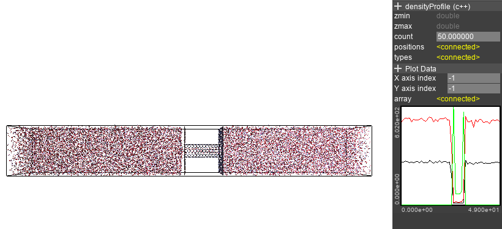
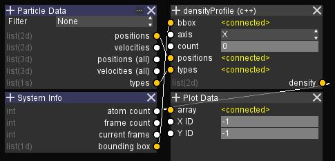

Density Profile¶
The density profile node shows the number density for each atom type. You can choose which axis to calculate the density.
{kind=link}
The count parameter controls how many slices to calculate the density profile.
Larger values gives a more detailed graph, but with more noise.
The density of each type has a different index in the 2nd axis,
so the density profile for a single type can be specified with the Y axis index of the Plotter.
The graph setup is as follows.
{kind=link}
Source code (Error checking omitted):
#include <iostream>
#include <cmath>
#include <vector>
#include <unordered_map>
//@in 6
double* bbox = 0;
//@in enum X Y Z
int axis = 0;
//@in
int count = 0;
//@in parcnt 3
double* positions = 0;
//@in parcnt
short* types = 0;
//@out count typecnt
double* density = 0;
//@var
int parcnt = 0;
//@var
int typecnt = 0;
//@entry
void Do () {
double zmin = bbox[axis*2];
double zmax = bbox[axis*2+1];
double vol = (bbox[1]-bbox[0])*(bbox[3]-bbox[2])*(bbox[5]-bbox[4]) / count;
double dd = 1/vol;
std::unordered_map<short, std::vector<double>> dens;
for (int a = 0; a < parcnt; a++) {
auto z = (positions[a*3 + axis] - zmin)/(zmax-zmin);
auto i = (int)floor(z*count);
if (i < count) {
short tp = types[a];
dens[tp].resize(count);
dens[tp][i] += dd;
}
}
typecnt = (int)dens.size();
if (density) delete[](density);
density = new double[count * typecnt];
int a = 0;
for (auto& d : dens) {
for (int x = 0; x < count; x++)
density[x*typecnt + a] = d.second[x];
a++;
}
}